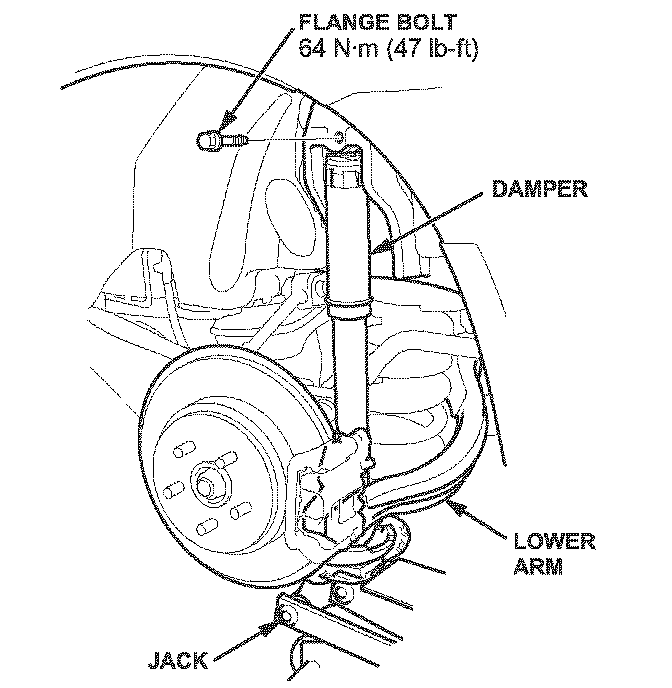

Suspension - Rear Suspension Knock or Clunk Noise
07-033June 27, 2007
Applies To:
2007 MDX - From VIN 2HNYD....7H500001 thru 2HNYD....7H521790
2007 MDX: Knock or Clunk From the Rear Suspension
SYMPTOM
There is a knock or clunk from the rear suspension when driving over bumps.
PROBABLE CAUSE
The head on one or both of the rear damper upper flange bolts is not concentric.
CORRECTIVE ACTION
Replace the upper mounting bolts on both rear dampers.
PARTS INFORMATION
Damper flange bolt (two required):
P/N 90171-STX-A01
WARRANTY CLAIM INFORMATION
In warranty:
The normal warranty applies.
Operation Number: 417135
Flat Rate Time: 0.5 hour
Failed Part: P/N 90171-STX-A01
Defect Code: 07701
Symptom Code: 04201
Template ID: 07-033A
Skill Level: Repair Technician
Out of warranty:
Any repair performed after warranty expiration may be eligible for goodwill consideration by the District Parts and Service Manager or your Zone Office. You must request consideration, and get a decision, before starting work.
REPAIR PROCEDURE
1. Raise the vehicle on a lift.
2. Remove the rear wheels.

3. Position a jack under the lower arm. Raise the jack until the suspension begins to compress.
4. Remove the flange bolt from the top of the damper.
5. Install a new flange bolt, and torque it to 64 N.m (47 lb-ft).
6. Remove the jack from the lower arm.
7. Repeat steps 3 thru 6 for the other side.
8. Install the rear wheels and torque the wheel nuts to 127 N.m (94 lb-ft).
9. Lower the vehicle.
10. Test-drive the vehicle over rough roads. If there is still a noise, continue with normal troubleshooting.